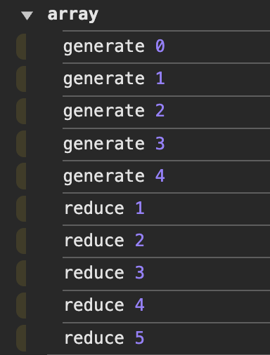
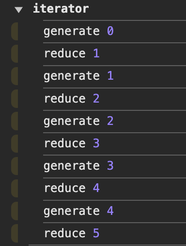
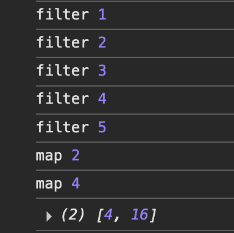
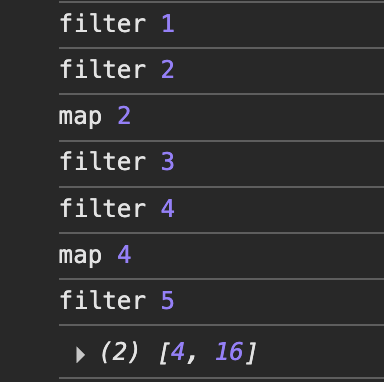
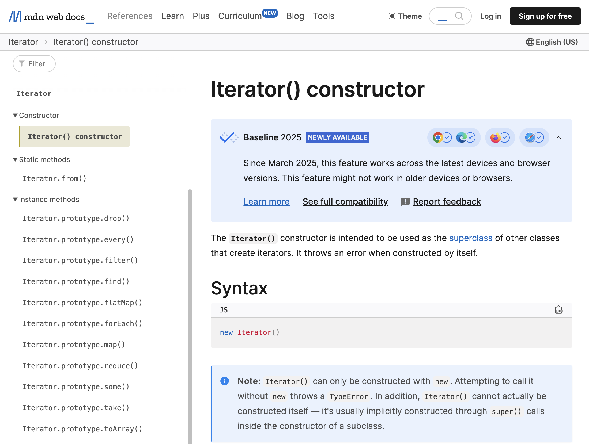

이터레이터 헬퍼?
이터레이터 헬퍼(Iterator Helper)는 ECMAScript 2025(ES2025)에 새롭게 추가될 기능으로, 이터레이터를 더욱 편리하게 사용할 수 있도록 돕는 다양한 인터페이스의 집합입니다.
ES2015에서 이터레이터 프로토콜이 도입된 이후, 필요한 기능을 직접 구현하거나 배열로 변환하여 배열 메서드를 사용하는 방법 외에는 이터레이터를 폭넓게 활용하기가 어려웠습니다. 하지만 필요한 기능을 직접 구현하면 오류 발생 확률이 높을 뿐 아니라 제한된 기능만 활용하게 되기 쉽고, 배열로 변환하면 지연 평가라는 이터레이터의 장점을 잃고 불필요한 메모리를 낭비하게 되어 비효율적입니다.
이제 이터레이터 헬퍼 메서드를 체이닝하여 이터레이터의 지연 평가 기능을 적극 활용하면, 코드 가독성을 높이고 순회 횟수를 줄임으로써 성능을 크게 개선할 수 있게 되었습니다.
이 글에서는 지연 평가를 위한 이터레이터 메서드 체이닝의 동작 원리를 알아보고, 이터레이터 헬퍼 메서드의 종류 및 성능상 이점을 테스트해 본 다음, 실무에서 데이터 타입 별로 기존 코드를 이터레이터 헬퍼로 대체하기 위한 다양한 기법 및 유의사항을 살펴보겠습니다.
지연 평가?
이터레이터의 next 메서드는 { value: 반환값, done: boolean } 객체를 반환합니다. for ... of 문법은 내부적으로 next 메서드를 done이 true가 될 때까지 반복 호출합니다. 단순한 순회 명령만 보면 배열의 메서드와 큰 차이가 없어 보일 수 있습니다.
그러나 배열 메서드는 한 번에 모든 순회 대상을 메모리에 적재한 뒤 처리하는 반면, 이터레이터는 next()를 호출하기 전까지 아무 작업도 하지 않고 대기합니다. next()가 호출되는 시점에 비로소 순회 대상의 ‘다음’ 요소를 평가합니다. 이를 지연 평가(Lazy Evaluation)라고 합니다.
1 | // 1. 배열 |
결과만 보면 배열과 이터레이터 사이에 차이가 없는 것처럼 보입니다. 하지만 동작 방식에는 큰 차이가 있습니다. 코드 곳곳에 로그를 추가해 확인해 보겠습니다.
1 | console.group('array') |
위 코드를 실행하면 개발자 도구 콘솔에 다음과 같은 내용이 출력됩니다.
|  |  | |
| 배열 결과 | 이터레이터 결과 |
배열 코드에서는 generate가 5번 출력된 후 reduce가 5번 출력되었습니다. 반면, 이터레이터 코드에서는 generate와 reduce가 번갈아 출력되었습니다. 즉, 배열은 모든 요소를 생성한 뒤 연산을 수행했지만, 이터레이터는 값을 하나 생성하고 바로 연산을 수행한 뒤 다시 값을 생성하는 방식으로 진행되었습니다.
for ... of 문법은 내부적으로 next 메서드를 호출하여 done이 true가 될 때까지 반복합니다. next가 호출되면 제너레이터 함수의 실행이 시작되고, yield를 만나면 멈춥니다. 이후 다시 next가 호출되면 멈췄던 자리에서 실행을 재개합니다. 이처럼 for ... of는 필요한 순간까지 기다렸다가(지연) 평가를 수행합니다.
이터레이터 메서드 체이닝
좀 더 복잡한 연산 과정을 살펴보겠습니다. 다음은 배열의 filter와 map 메서드를 체이닝한 코드입니다.
1 | const arr = Array.from({ length: 5 }, (_, i) => i + 1) |
위 코드를 실행하면 개발자 도구 콘솔에 다음과 같은 내용이 출력됩니다.
|  |
| 배열 메서드 체이닝 |
filter 메서드는 배열의 모든 요소를 순회하고, map 메서드는 필터링 된 결과 배열을 다시 순회합니다. 따라서 전체 순회 횟수는 filter에서 한 번, map에서 한 번으로 총 두 번입니다. 이를 한 번의 순회로 처리하려면 어떻게 해야 할까요? 일단 메서드 체이닝으로 분리된 내용을 for ... of 내부로 옮겨봅시다.
1 | function* generator() { |
|  |
| 유사 지연 평가 |
위 코드는 한 번의 순회로 원하는 결과를 얻을 수 있었습니다. 실제 지연 평가도 위 코드에서 여러 명령을 순차적으로 수행한 것과 비슷하게 진행됩니다. 여러 메서드를 체이닝했을 때, 이터레이터의 각 항목에 대해 연결된 메서드를 순차적으로 실행하고, 모든 메서드 실행이 종료되면 비로소 다음 항목으로 넘어가 동일한 순서를 반복합니다.
다음은 직접 만든 지연 평가 메서드의 예시 코드입니다.
※ 주의 ※
다음 예제 코드는Iterator.prototype에 직접 메서드를 추가합니다. 이는 전역 객체를 수정하여 다른 라이브러리와 충돌하거나 예기치 않은 동작을 유발할 수 있습니다. 따라서 실제 프로젝트에서는Iterator.prototype을 직접 확장하지 않는 것을 권장합니다.
1 | Iterator.prototype._filter = function* (fn) { |
_filter와 _map은 제너레이터 메서드입니다. 변수 iter는 제너레이터를 실행한 결과물인 이터레이터에 불과하며, 아직 평가가 이루어지지 않은 상태입니다. 따라서 마지막 줄에서 중단된 상태의 이터레이터(Iterator._map {<suspended>})가 출력됩니다.
이제 iter.next()를 호출하면 다음과 같은 순서로 코드가 진행됩니다.
- L25)
Iterator._map이터레이터에 대해 첫 번째 평가가 이루어집니다. 이제부터Iterator._map은<running>상태가 됩니다. 이터레이터 내부에서yield를 만날 때까지 코드를 진행합니다. - L9)
_map내부에서this는 메서드 체이닝 상Iterator._filter입니다. L12)for (const item of this)에서this가 이터레이터이므로 해당 이터레이터(L21)_filter(...))를 먼저 평가합니다._filter에서yield를 만나면_filter를 빠져나오면서 이 값을item에 할당하고, L12)for ... of내부 코드를 진행합니다. - L1)
_filter내부에서this는 메서드 체이닝 상Array Iterator입니다. L4)for (const item of this)에서this가 이터레이터이므로 해당 이터레이터(L20)values())를 먼저 평가합니다.values에서yield를 만나면values를 빠져나오면서 이 값을item에 할당하고, L4)for ... of내부 코드를 진행합니다. - L20)
values는 첫 번째 이터레이션에서{ value: 1, done: false }를yield합니다. - L1)
_filter의 L4)for ... of문에서item에는 위 4번에서yield한 객체의value값, 즉1이 할당됩니다. L6)fn(1)의 실행 결과1 % 2 !== 0으로false가 되므로, 조건문을 충족하지 않아yield하지 않고, 다음 이터레이션으로 넘어갑니다. - 다시 L20)
values()에 대한 평가를 합니다.values는 두 번째 이터레이션에서{ value: 2, done: false }를yield합니다. - L1)
_filter의 L4)for ... of문에서item에는 위2가 할당됩니다. L6)fn(2)의 실행 결과2 % 2 === 0으로true가 되므로, 조건문을 충족하여2를yield합니다. - L9)
_map의 L12)for ... of문에서item에는 위 7번에서yield한 객체의value값, 즉2가 할당됩니다. L14)fn(2)의 실행 결과2 ** 2 = 4로4가 반환되어,{ value: 4, done: false }를yield합니다. 이로써Iterator._map에 대한next()호출의 결과를 반환하였으므로, 이터레이션을 멈추고 다시<suspended>상태로 돌아갑니다.
같은 방식으로 iter.next()를 반복하여 실행한 결과는 다음과 같습니다.
/* L숫자) : 위 코드 블락의 줄 번호를 의미합니다. */ |
for ... of는 done이 true일 때까지 next 메서드를 반복 호출하므로, 위 코드의 전체 iter.next()를 대체할 수 있습니다.
for(const value of iter) { |
펼치기 문법(Spread Syntax, ...)은 연속된 iter.next()의 각 value를 나열하므로, 마찬가지로 전체 iter.next()를 대체할 수 있습니다.
const resultArray = [...iter] |
혹은, 다음과 같이 메서드 체이닝을 활용하는 방안도 좋습니다.
1 | Iterator.prototype._toArray = function () { |
이터레이터 헬퍼
사실 앞서 Iterator.prototype에 추가한 여러 메서드(_filter, _map, _toArray)에서 접두어 _를 제거하면, ES2025에 추가될 이터레이터 헬퍼 메서드(filter, map, toArray)와 동일합니다. 지금 브라우저 개발자 도구의 콘솔 탭에서 다음 코드를 실행해 보세요. 이미 주요 브라우저(크롬 및 크롬 기반 브라우저, 파이어폭스, 사파리)가 이터레이터 헬퍼 메서드를 지원하고 있습니다. (브라우저 및 OS 업데이트가 필요할 수 있습니다.)
각 메서드에 대한 정확한 지원 여부는 Can I Use - Iterator.map에서 확인하시기 바랍니다.
1 | const arr = [1, 2, 3, 4, 5] |
아래 그림은 MDN - Iterator() constructor 페이지의 스크린숏입니다. 그림의 좌측 목록에 보이는 모든 항목이 2025년 3월에 새롭게 Baseline에 추가된 기능들입니다.
추가된 이터레이터 헬퍼 기능들을 간략히 살펴보겠습니다.
1. 이터레이터를 소비하지 않는 메서드
여기서 소개하는 이터레이터 헬퍼 메서드는 모두 실행 결과로 새로운 이터레이터를 반환합니다. 즉, 이 메서드들을 호출하는 것만으로는 평가가 이루어지지 않습니다. 평가를 위해서는 뒤에 등장할 이터레이터를 소비하는 메서드를 체이닝하거나, 이터레이터의 next 메서드를 호출해야 합니다.
1-1. .map(mapperFn) • Iterator.prototype.map
map 메서드는 이터레이터(this)의 각 요소에 대해 인자로 받은 함수(mapperFn)를 실행하여, 실행 결과들로 구성된 새로운 이터레이터를 반환합니다. 배열의 Array.prototype.map 메서드와 유사합니다.
1-2. .filter(filtererFn) • Iterator.prototype.filter
filter 메서드는 이터레이터(this)의 각 요소에 대해 인자로 받은 함수(filtererFn)를 실행하여, 실행 결과가 true인 요소들만으로 구성된 새로운 이터레이터를 반환합니다. 배열의 Array.prototype.filter 메서드와 유사합니다.
1-3. .take(limit) • Iterator.prototype.take
take 메서드는 이터레이터(this)의 요소 중 처음부터 인자로 받은 수(limit)만큼의 요소만 포함하는 새로운 이터레이터를 반환합니다. 배열에서 arr.slice(0, limit)를 실행하는 것과 유사합니다.
1-4. .drop(limit) • Iterator.prototype.drop
drop 메서드는 이터레이터(this)의 요소 중 처음부터 인자로 받은 수(limit)만큼의 요소를 제외한 나머지 요소들로 구성된 새로운 이터레이터를 반환합니다. 배열에서 arr.slice(limit)를 실행하는 것과 유사합니다.
1-5. .flatMap(mapperFn) • Iterator.prototype.flatMap
flatMap 메서드는 이터레이터(this)의 각 요소에 대해 인자로 받은 함수(mapperFn)를 실행하여, 실행 결과를 단일 깊이로 평탄화(flatten) 한 새로운 이터레이터를 반환합니다. 배열의 Array.prototype.flatMap 메서드와 유사합니다.
1 | const nestedArray = [[1, 2], [3, 4], [5]] |
2. 이터레이터를 소비하는 메서드
여기서 소개하는 이터레이터 헬퍼 메서드는 모두 실행 시 이터레이터를 소비하여, 그 결과로 이터레이터가 아닌 값을 반환합니다. 이터레이터를 소비하므로, 이후로는 이터레이터 헬퍼 메서드를 체이닝할 수 없습니다.
2-1. .reduce(reducer [, initialValue ]) • Iterator.prototype.reduce
reduce 메서드는 이터레이터(this)의 각 요소에 대해 인자로 받은 함수(reducer)를 실행한 결과를 누적하여 최종 값을 반환합니다.
2-2. .toArray() • Iterator.prototype.toArray
toArray 메서드는 이터레이터(this)의 각 요소로 구성된 배열을 반환합니다.
2-3. .forEach(fn) • Iterator.prototype.forEach
forEach 메서드는 이터레이터(this)의 각 요소에 대해 인자로 받은 함수(fn)를 실행합니다. 배열의 Array.prototype.forEach 메서드와 유사합니다.
2-4. .some(fn) • Iterator.prototype.some
some 메서드는 이터레이터(this)의 요소 중 인자로 받은 함수(fn)를 실행한 결과가 하나라도 true이면 true를, 그렇지 않으면 false를 반환합니다. 배열의 Array.prototype.some 메서드와 유사합니다.
2-5. .every(fn) • Iterator.prototype.every
every 메서드는 some 메서드와 반대로, 이터레이터(this)의 요소 중 인자로 받은 함수(fn)를 실행한 결과가 모두 true이면 true를, 그렇지 않으면 false를 반환합니다. 배열의 Array.prototype.every 메서드와 유사합니다.
2-6. .find(fn) • Iterator.prototype.find
find 메서드는 이터레이터(this)의 요소 중 인자로 받은 함수(fn)를 실행한 결과가 true인 첫 번째 요소를 반환합니다. 결괏값이 true인 요소가 하나도 없다면 undefined를 반환합니다. 배열의 Array.prototype.find 메서드와 유사합니다.
3. 정적 메서드
3-1. Iterator.from(object)
Iterator.from은 이터레이터 또는 이터러블 객체를 인자로 받아 Iterator 클래스의 인스턴스를 반환합니다.
이터러블 객체란, 이터레이터를 반환하는 [Symbol.iterator] 메서드를 보유한 객체를 의미합니다. [Symbol.iterator]는 이터레이터 프로토콜을 따르는 객체를 반환해야 합니다. 이터레이터 프로토콜이란 ‘이터레이터’로 인정받기 위한 최소한의 규약으로, next 메서드를 소유하고, next 메서드는 호출 시 불리언 done 프로퍼티를 포함한 객체를 반환해야 합니다.
이 규약만 충족하면 내용은 개발자가 자유롭게 구현할 수 있습니다. 따라서 [Symbol.iterator] 메서드는 제너레이터일 수도 있고, Iterator 인스턴스를 반환하는 함수일 수도 있으며, 커스텀 객체를 반환하는 함수일 수도 있습니다. 앞의 두 방식은 이터레이터 헬퍼 메서드를 사용할 수 있습니다(제너레이터는 Iterator를 상속받음). 그러나 마지막 방식은 이터레이터 프로토콜을 충족했을 뿐, Iterator 클래스를 상속한 인스턴스는 아니므로 헬퍼 메서드를 사용할 수 없습니다. 이런 경우 Iterator.from은 원본 이터레이터를 Iterator 인스턴스로 변환하여 반환합니다.
정리하면, Iterator.from은 다음과 같은 동작을 수행합니다.
대상이
Iterator인스턴스라면, 대상을 그대로 반환합니다.1
2
3
4
5
6
7const generatedIterator = (function* () {
yield 1
})() // 제너레이터(Iterator의 서브 클래스)의 인스턴스
const newIter1 = Iterator.from(generatedIterator)
console.log(generatedIterator instanceof Iterator) // true
console.log(newIter1 === generatedIterator) // true대상이 이터레이터 프로토콜을 따르는 일반 객체라면, 이를
Iterator인스턴스로 변환하여 반환합니다.1
2
3
4
5
6
7
8
9
10
11
12const normalIterator = (() => {
let i = 0
return {
next() {
return { value: i, done: i++ > 3 }
}
}
})() // Iterator의 인스턴스가 아님
const newIter2 = Iterator.from(normalIterator)
console.log(normalIterator instanceof Iterator) // false
console.log(newIter2 instanceof Iterator) // true대상이 이터러블 객체라면,
[Symbol.iterator]메서드를 실행하여 반환된 값(이터레이터)에 위의 1번 또는 2번 항목의 동작을 적용합니다.1
2
3
4
5
6
7
8
9
10
11
12
13
14
15
16const generatedIterableObject = {
[Symbol.iterator]() {
return generatedIterator
}
}
const normalIterableObject = {
[Symbol.iterator]() {
return normalIterator
}
}
const newIter1 = Iterator.from(generatedIterableObject)
const newIter2 = Iterator.from(normalIterableObject)
console.log(newIter1 === generatedIterator) // true
console.log(normalIterator instanceof Iterator) // false
console.log(newIter2 instanceof Iterator) // true
성능
여기서는 성능 측정을 위한 함수를 작성하여 공통적으로 사용하겠습니다.
1 | const test = (title, initTarget, func, trial = 10) => { |
모든 테스트는 다음 환경에서 실행하였습니다.
- MacBook Pro (M1, 2021) - macOS Sequoia 15.4.1 - Node.js v22.12.0 - Chrome 138.0.7158.0 - Firefox 138.0.1 - Safari 18.4
브라우저에 따라 대규모 데이터에 대한 단일 순회에서의 처리 속도가 다른데, 전반적으로 현재까지는 이터레이터가 기존 메서드에 비해 다소 느린 편입니다.
const arr = Array.from({ length: 50_000_000 }, (_, i) => [i, i]) |
데이터 크기가 작은 경우에는 유의미한 성능 차이가 없습니다.
1 | const arr = Array.from({ length: 10_000 }, (_, i) => [i, i]) |
위 결과와 같이, 단일 순회에서는 (일부 브라우저에서) 이터레이터가 배열의 forEach 메서드보다 느립니다. 하지만 이는 단일 순회에 한정된 문제일 뿐이며, 그 차이도 크지 않습니다. 오히려 다음과 같이 메서드 체이닝을 사용하는 경우, 이터레이터가 훨씬 더 효율적일 수 있습니다.
1 | const pageSize = 10 |
배열은 filter 단계에서 이미 5백만 개의 데이터를 처리하느라 메모리 사용량이 급증하거나, 연산 시간이 길어질 수 있습니다. 반면, 이터레이터는 지연 평가 덕분에 필요한 데이터만 처리하므로 훨씬 빠르고 효율적입니다. 이처럼 단일 순회에서의 성능 저하보다, 순회 횟수를 줄임으로써 얻는 이점이 훨씬 큽니다. 또한, 대규모 데이터 처리 시 메모리 초과로 인해 서비스가 중단되는 위험을 줄일 수 있다는 점도 큰 장점입니다.
더 나아가, 주요 브라우저 벤더들은 자바스크립트 성능 최적화를 위해 지속적으로 노력하고 있습니다. 예를 들어, ES2015 도입 초기에는 let, const 및 블록 스코프의 성능 문제가 제기되었지만, 몇 년 사이에 이러한 논란은 사라졌고, 경우에 따라 더 빠른 성능을 보이기도 했습니다. 이러한 흐름을 고려할 때, 이터레이터의 성능도 시간이 지남에 따라 개선될 가능성이 높습니다.
데이터 타입별 이터레이터 도입 기법
이터레이터 헬퍼는 기존에 사용하던 모든 순회 문법을 대체할 만큼 강력한 기능을 제공합니다. 아래에서는 다양한 데이터 타입에 대해 이터레이터를 활용하는 실용적인 방법을 소개합니다.
1. 배열(Array)
배열은 Symbol.iterator가 구현된 이터러블 객체입니다. 따라서 [Symbol.iterator] 메서드를 통해 이터레이터로 변환할 수 있습니다. Iterator.from 및 values 메서드도 동일하게 동작합니다.
1 | const pageSize = 5 |
2. 맵(Map), 셋(Set)
맵과 셋은 처음부터 이터레이터를 사용할 목적으로 설계된 자료구조입니다. 복잡한 연산이 필요할 때 entries, keys, 또는 values 메서드를 사용해 이터레이터로 변환한 뒤 연산을 수행하고, 마지막에 다시 맵 또는 셋으로 변환하면 됩니다.
1 | const map = new Map([ |
[Symbol.iterator] 메서드와 Iterator.from은 entries 메서드와 동일하게 동작합니다.
1 | const filteredArray = map[Symbol.iterator]() |
3. 객체(Object)
객체는 원래 순회에 적합하지 않은 자료구조입니다. 내부를 순회하는 방법이 몇 가지 있긴 하지만, 모두 한계가 있습니다.
우선 객체의 for ... in 문법은 프로토타입 체인 상의 상위 프로퍼티까지 모두 열거하여 순회합니다. 따라서 대상 객체의 프로퍼티만 출력하려면 hasOwn으로 필터링해야 합니다.
1 | const Rectangle = { |
Object.entries, Object.keys, Object.values는 hasOwn 필터링이 필요하지 않습니다. 하지만 이들은 하위 호환성을 위해 배열을 반환합니다. (배열, Map, Set의 entries, keys, values 메서드는 이터레이터를 반환합니다.)
console.log(Object.entries(square)) // [['width', 10]] |
일반 객체 자체로는 for ... of를 사용할 수 없습니다. 필요할 때마다 Object.entries, Object.keys, Object.values 등을 사용해 변환할 수 있지만, 이터레이터 변환 메서드를 적용하면 더 편리합니다.
1 | const IterableObject = { |
이제 Object.entries, Object.keys, Object.values 대신 이터러블 객체에서 직접 entries, keys, 또는 values 메서드를 호출해 이터레이터를 사용할 수 있습니다. 필요에 따라 Map이나 Set으로 변환할 수도 있습니다.
1 | const jybIdols = Object.fromEntries( |
4. 문자열
문자열은 배열과 마찬가지로 Symbol.iterator가 구현된 이터러블 객체입니다. 따라서 [Symbol.iterator] 메서드나 Iterator.from으로 이터레이터로 변환할 수 있습니다.
1 | const crypt = adder => str => |
마치며
이제 이터레이터 헬퍼의 도입으로 순회 작업이 더욱 간결하고 효율적으로 개선되고 있습니다. ES2025에서는 동기(sync) 이터레이터 헬퍼가 도입되었으며, 비동기(async) 헬퍼는 별도의 제안으로 분리되어 현재 Stage 2에 올라 있습니다. 동시성 관련 문제가 해결되면, 머지않아 비동기 이터레이터 헬퍼도 정식으로 도입될 것입니다.
단일 순회에서는 아직 이터레이터가 기존 메서드나 명령어보다 다소 느린 경향이 있습니다. 하지만 성능이 극도로 중요한 경우가 아니라면, 이터레이터로 전환할 때 얻는 실익이 더 크다고 생각합니다. 게다가 앞서 살펴보았듯, 단일 순회를 제외한 대부분의 복잡한 연산에서 이터레이터는 성능과 안정성 측면에서 탁월한 결과를 보여줍니다.
본문에서 자세히 다루지는 않았지만, 이터레이터 헬퍼는 함수형 프로그래밍과도 매우 잘 어울립니다. 앞서 직접 구현한 _filter, _map 등과 같이, 필요한 메서드들을 차곡차곡 쌓아 자신만의 함수형 프로그래밍 체계를 만들어 보는 것도 좋은 방법입니다. Lodash로부터의 해방?!
사파리 브라우저는 2025년 3월 말에야 이터레이터 헬퍼를 정식으로 지원하기 시작했기 때문에, 당장은 일부 오류를 발견하거나 성능 저하를 경험할 가능성이 있습니다. 하지만 몇 달 내로 안정성이 크게 향상될 것이라고 기대합니다.
혹시 제가 빠뜨리거나 잘못 소개한 내용이 있다면 댓글로 알려주세요. 실용적인 예시를 공유해 주신다면 더욱 감사하겠습니다. 다양한 의견과 정보 교류를 통해 함께 성장하는 기회가 될 수 있다면 좋겠습니다.